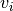
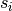
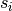

7. Eigenvalue Calculations¶
An eigenvalue calculation, also referred to as a criticality calculation, is a transport simulation wherein the source of neutrons includes a fissionable material. Some common eigenvalue calculations include the simulation of nuclear reactors, spent fuel pools, nuclear weapons, and other fissile systems. The reason they are called eigenvalue calculations is that the transport equation becomes an eigenvalue equation if a fissionable source is present since then the source of neutrons will depend on the flux of neutrons itself. Eigenvalue simulations using Monte Carlo methods are becoming increasingly common with the advent of high-performance computing.
This section will explore the theory behind and implementation of eigenvalue calculations in a Monte Carlo code.
7.1. Method of Successive Generations¶
The method used to converge on the fission source distribution in an eigenvalue
calculation, known as the method of successive generations, was first introduced
by [Lieberoth]. In this method, a finite number of neutron histories,
 , are tracked through their lifetime iteratively. If fission occurs,
rather than tracking the resulting fission neutrons, the spatial coordinates of
the fission site, the sampled outgoing energy and direction of the fission
neutron, and the weight of the neutron are stored for use in the subsequent
generation. In OpenMC, the array used for storing the fission site information
is called the fission bank. At the end of each fission generation,
source sites for the next generation must be randomly sampled from the
, are tracked through their lifetime iteratively. If fission occurs,
rather than tracking the resulting fission neutrons, the spatial coordinates of
the fission site, the sampled outgoing energy and direction of the fission
neutron, and the weight of the neutron are stored for use in the subsequent
generation. In OpenMC, the array used for storing the fission site information
is called the fission bank. At the end of each fission generation,
source sites for the next generation must be randomly sampled from the  fission sites that were stored to ensure that the neutron population does not
grow exponentially. The sampled source sites are stored in an array called the
source bank and can be retrieved during the subsequent generation.
fission sites that were stored to ensure that the neutron population does not
grow exponentially. The sampled source sites are stored in an array called the
source bank and can be retrieved during the subsequent generation.
It’s important to recognize that in the method of successive generations, we must start with some assumption on how the fission source sites are distributed since the distribution is not known a priori. Typically, a user will make a guess as to what the distribution is – this guess could be a uniform distribution over some region of the geometry or simply a point source. Fortunately, regardless of the choice of initial source distribution, the method is guaranteed to converge to the true source distribution. Until the source distribution converges, tallies should not be scored to since they will otherwise include contributions from an unconverged source distribution.
The method by which the fission source iterations are parallelized can have a large impact on the achievable parallel scaling. This topic is discussed at length in Fission Bank Algorithms.
7.2. Source Convergence Issues¶
7.2.1. Diagnosing Convergence with Shannon Entropy¶
As discussed earlier, it is necessary to converge both  and the
source distribution before any tallies can begin. Moreover, the convergence rate
of the source distribution is in general slower than that of
. One should thus examine not only the convergence of
but also the convergence of the source distribution in order to
make decisions on when to start active batches.
and the
source distribution before any tallies can begin. Moreover, the convergence rate
of the source distribution is in general slower than that of
. One should thus examine not only the convergence of
but also the convergence of the source distribution in order to
make decisions on when to start active batches.
However, the representation of the source distribution makes it a bit more
difficult to analyze its convergence. Since is a scalar
quantity, it is easy to simply look at a line plot of versus the
number of batches and this should give the user some idea about whether it has
converged. On the other hand, the source distribution at any given batch is a
finite set of coordinates in Euclidean space. In order to analyze the
convergence, we would either need to use a method for assessing convergence of
an N-dimensional quantity or transform our set of coordinates into a scalar
metric. The latter approach has been developed considerably over the last decade
and a method now commonly used in Monte Carlo eigenvalue calculations is to use
a metric called the Shannon entropy, a concept borrowed from information
theory.
To compute the Shannon entropy of the source distribution, we first need to discretize the source distribution rather than having a set of coordinates in Euclidean space. This can be done by superimposing a structured mesh over the geometry (containing at least all fissionable materials). Then, the fraction of source sites that are present in each mesh element is counted:
(1)
The Shannon entropy is then computed as
(2)
where is the number of mesh elements. With equation
(2), we now have a scalar metric that we can use to assess the
convergence of the source distribution by observing line plots of the Shannon
entropy versus the number of batches.
In recent years, researchers have started looking at ways of automatically
assessing source convergence to relieve the burden on the user of having to look
at plots of and the Shannon entropy. A number of methods have
been proposed (see e.g. [Romano], [Ueki]), but each of these is not without
problems.
7.3. Uniform Fission Site Method¶
Generally speaking, the variance of a Monte Carlo tally will be inversely proportional to the number of events that score to the tally. In a reactor problem, this implies that regions with low relative power density will have higher variance that regions with high relative power density. One method to circumvent the uneven distribution of relative errors is the uniform fission site (UFS) method introduced by [Sutton]. In this method, the portion of the problem containing fissionable material is subdivided into a number of cells (typically using a structured mesh). Rather than producing

fission sites at each collision where  is the weight of the neutron,
is the weight of the neutron,
 is the previous-generation estimate of the neutron multiplication
factor,
is the previous-generation estimate of the neutron multiplication
factor,  is the neutron production cross section, and
is the neutron production cross section, and
 is the total cross section, in the UFS method we produce
is the total cross section, in the UFS method we produce

fission sites at each collision where  is the fraction of the total
volume occupied by cell  and  is the fraction of the fission
source contained in cell . To ensure that no bias is introduced, the
weight of each fission site stored in the fission bank is
and  is the fraction of the fission
source contained in cell . To ensure that no bias is introduced, the
weight of each fission site stored in the fission bank is  rather
than unity. By ensuring that the expected number of fission sites in each mesh
cell is constant, the collision density across all cells, and hence the variance
of tallies, is more uniform than it would be otherwise.
rather
than unity. By ensuring that the expected number of fission sites in each mesh
cell is constant, the collision density across all cells, and hence the variance
of tallies, is more uniform than it would be otherwise.
| [Lieberoth] | J. Lieberoth, “A Monte Carlo Technique to Solve the Static Eigenvalue Problem of the Boltzmann Transport Equation,” Nukleonik, 11, 213-219 (1968). |
| [Romano] | Paul K. Romano, “Application of the Stochastic Oscillator to Assess Source Convergence in Monte Carlo Criticality Calculations,” Proc. International Conference on Mathematics, Computational Methods, and Reactor Physics, Saratoga Springs, New York (2009). |
| [Sutton] | Daniel J. Kelly, Thomas M. Sutton, and Stephen C. Wilson, “MC21 Analysis of the Nuclear Energy Agency Monte Carlo Performance Benchmark Problem,” Proc. PHYSOR 2012, Knoxville, Tennessee, Apr. 15–20 (2012). |
| [Ueki] | Taro Ueki, “On-the-Fly Judgments of Monte Carlo Fission Source Convergence,” Trans. Am. Nucl. Soc., 98, 512 (2008). |